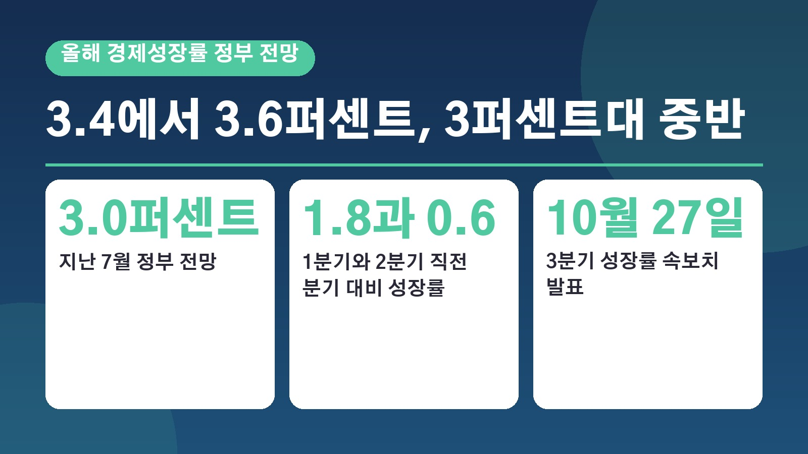
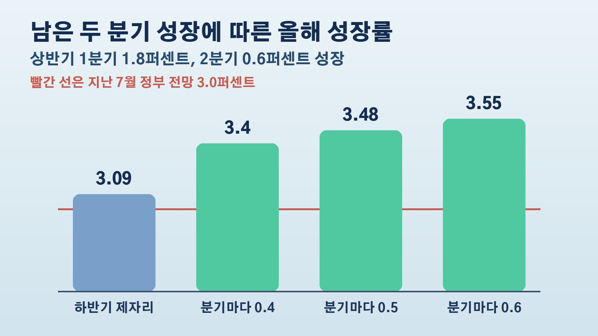

정부가 올해 성장률 3.4에서 3.6퍼센트를 꺼낸 근거, 남은 두 분기 0.4퍼센트씩만 커도 닿는 계산과 숫자만큼 체감되지 않는 이유

뉴스에서는 경제가 좋아진다는데 장바구니나 통장 사정은 그대로라 고개를 갸웃하셨던 분들 많으실 거예요. 이번에 정부가 올해 우리 경제 성장률을 3퍼센트대 중반까지 내다봤습니다. 지난 7월 전망보다 꽤 높아진 숫자인데요. 왜 이렇게 올려 말할 수 있는지, 다른 기관들은 어떻게 보는지, 그리고 이 숫자와 우리가 느끼는 경기 사이에 왜 거리가 있는지 차례로 정리해 볼게요.
7월 3.0퍼센트에서 3퍼센트대 중반으로, 무엇이 달라졌나
이형일 부총리 겸 재정경제부 장관은 16일 현지시간 태국 방콕에서 주요 20개국 재무장관과 중앙은행 총재 회의, 국제통화기금과 세계은행 연차총회 참석차 열린 동행 기자단 간담회에서 남은 기간 큰 외부 사건이 없다면 올해 성장률이 3퍼센트대 중반도 가능하다고 말했어요. 구체적인 범위를 묻자 3.4, 3.5, 3.6퍼센트라고 답했습니다.
정부가 지난 7월 내놓은 올해 성장률 전망은 3.0퍼센트였어요. 석 달 만에 최소 0.4퍼센트포인트를 올려 말한 셈입니다. 이 부총리는 근거로 수출과 설비투자를 꼽았어요. 3분기에도 수출과 설비투자가 아주 좋은 모습을 보이고 있고, 반도체는 여전히 수요가 공급보다 많은 상황이라는 설명이었습니다.
상반기에 이미 커진 경제, 남은 두 분기 계산법
이 전망이 가능한 이유는 상반기 성적에 있어요. 우리 경제는 1분기에 직전 분기보다 1.8퍼센트, 2분기에 0.6퍼센트 성장했습니다. 이미 경제 규모가 크게 커진 상태라 하반기 부담이 줄어든 거예요.
뉴스1이 한국은행 경제통계시스템의 실질 국내총생산 자료로 계산한 결과를 보면 흐름이 잘 보입니다. 3분기와 4분기가 2분기 수준에서 전혀 늘지 않아도 연간 성장률은 3.1퍼센트로 정부의 7월 전망을 넘어요. 남은 두 분기에 직전 분기보다 0.4퍼센트씩 성장하면 3.40퍼센트, 0.5퍼센트씩이면 3.48퍼센트, 0.6퍼센트씩이면 3.55퍼센트가 됩니다. 부총리가 말한 범위에 들어가려면 남은 두 분기에 0.4에서 0.6퍼센트 정도씩 성장하면 된다는 뜻이에요.
만약 3.5퍼센트 이상이 나오면 코로나19 충격 뒤 반등했던 2021년의 4.7퍼센트를 빼고는 2011년 3.7퍼센트 이후 15년 만에 가장 높은 성장률이 됩니다. 3.4퍼센트라면 2017년과 같은 수준이고요.
국제기구 전망과 견주어 보면
다른 기관들도 최근 전망을 잇달아 올렸어요. 국제통화기금은 13일 발표한 10월 세계경제전망에서 올해 한국 성장률을 7월의 2.6퍼센트에서 3.3퍼센트로 0.7퍼센트포인트 높였습니다. 반도체에 대한 강한 해외 수요가 중동 전쟁의 부정적 영향을 상쇄할 것이라는 설명이었어요. 경제협력개발기구는 9월에 3.7퍼센트를 제시했고, 한국은행은 8월에 3.3퍼센트, 한국개발연구원과 아시아개발은행은 3.2퍼센트, 신용평가사 무디스는 3.5퍼센트로 봤습니다.
내년 전망은 기관마다 더 벌어져요. 정부와 한국개발연구원은 2.2퍼센트, 아시아개발은행 2.3퍼센트, 경제협력개발기구 2.6퍼센트, 국제통화기금 2.8퍼센트, 한국은행 2.9퍼센트입니다. 올해 많이 오른 만큼 내년에는 2퍼센트대로 내려설 수 있다는 관측과 두 해 연속 3퍼센트대가 가능하다는 분석이 함께 나와요.

부총리가 특히 강조한 것은 잠재성장률이에요. 잠재성장률은 물가를 크게 자극하지 않으면서 경제가 꾸준히 낼 수 있는 성장 능력을 말합니다. 국제통화기금은 한국의 잠재성장률을 지난해 1.94퍼센트에서 올해 2.14퍼센트, 내년 2.20퍼센트로 추산했고, 부총리는 계속 내려가던 잠재성장률이 반등할 시기가 임박했다고 말했어요.
성장률만큼 체감되지 않는 이유
그런데 왜 생활에서는 이 숫자가 잘 느껴지지 않을까요. 최제민 현대차증권 연구원은 7월과 8월 소매판매가 줄었고 서비스업 흐름도 약했다며, 성장이 퍼지고 체감되는 정도는 발표되는 성장률보다 제한적이라고 평가했어요. 소비가 부진한 원인도 심리보다는 구매력에 있는 것으로 봤습니다. 반도체 중심의 수출과 투자 호조가 소비 같은 내수로 얼마나 번지느냐가 관건이라는 거예요.
부총리도 지속 가능한 성장을 위해 양극화 문제에 더 힘을 쏟겠다고 했습니다. 일자리가 여러 양극화 문제를 잇는 고리라며 일자리를 위해 더 노력하겠다고 했지만, 관계부처가 논의 중이라 대책이 언제 나올지는 특정하기 어렵다고 덧붙였어요. 초과 세수 같은 재원을 어떻게 쓸지도 아직 논의하지 못했다고 했고요.
앞으로의 변수도 있어요. 반도체 업황이 꺾이거나 중동 전쟁이 길어져 에너지 비용이 오르면 전망 달성에 부담이 될 수 있고, 인공지능 투자의 수익성에 대한 우려도 변수로 꼽힙니다.
27일 3분기 성장률 발표와 바뀌는 정부 전망 방식
가장 먼저 확인할 날짜는 10월 27일이에요. 이날 한국은행이 3분기 성장률 속보치를 발표합니다. 3분기에 많이 성장할수록 4분기 부담이 줄어드는 구조라, 정부 전망이 맞을지 가늠할 첫 분수령이 될 전망이에요. 증권가에서는 현대차증권이 3분기 성장률을 직전 분기 대비 0.8퍼센트, 메리츠증권이 1퍼센트 정도로 추정하고 있습니다.
정부의 전망 발표 방식도 바뀝니다. 지금은 연말과 6월 말에서 7월 초 사이 두 번 성장률 전망을 내는데, 이를 1년에 세 번으로 늘리겠다는 방침이에요. 경제가 빠르게 변하니 더 자주 점검하겠다는 취지이고, 그동안 여름에 함께 내던 하반기 경제성장전략은 내년에는 보기 어렵고 대신 전망을 낼 때마다 필요한 대책을 덧붙이겠다고 했습니다.
정리하면 상반기 높은 성장 덕분에 하반기에 뒷걸음질만 없다면 올해 성장률 3퍼센트를 넘길 기반은 마련됐고, 3퍼센트대 중반은 하반기 두 분기의 성적에 달려 있어요. 다만 그 성장이 일자리와 소비로 이어져야 우리 생활에서도 느낄 수 있는 만큼, 27일 발표되는 3분기 숫자와 함께 정부가 예고한 일자리 대책이 언제 어떻게 나올지도 같이 지켜보시면 좋겠습니다.
참고한 기사: 연합뉴스 이형일, 올해 성장률 3.4에서 3.6퍼센트 전망, 잠재성장률 반등 임박 2026년 10월 19일, 중앙일보 이형일, 올해 성장률 3퍼센트대 중반 가능 2026년 10월 19일, 이코노미스트 이형일, 올해 성장률 3.4에서 3.6퍼센트 가능 2026년 10월 19일, 뉴스1 정부 내다본 3퍼센트대 중반 성장, 3분기와 4분기 0.4에서 0.6퍼센트씩 성장하면 가능 2026년 10월 20일, 연합뉴스 국제통화기금, 올해 한국 성장률 3.3퍼센트 전망 2026년 10월 13일, 대한민국 정책브리핑 경제협력개발기구 올해 한국 성장률 전망치 3.7퍼센트로 올려 2026년 9월 23일
태그
경제성장률 올해성장률전망 3퍼센트대중반 이형일부총리 잠재성장률 국제통화기금전망 3분기성장률 반도체수출 설비투자 양극화